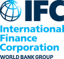
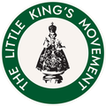

Strategy Development · Execution · Transformation
From strategic direction
to sustained execution.
I help senior leaders develop clear strategies, align stakeholders, and build the governance and performance systems that translate strategic priorities into coordinated action and measurable results. Drawing on 20 years with Palladium and my current independent advisory work, I support commercial, government, and mission-driven organizations navigating complex strategic and organizational challenges.
Only 21%
of senior executives reported that their strategies passed even four of ten tests of strategy quality. And the challenge continues after the strategy is developed: only about half of organizations effectively align their strategy with even the most fundamental elements of resource planning.
Organizations can encounter problems throughout the strategy process:
- The strategy does not provide sufficient direction. Priorities remain too broad, numerous, or insufficiently differentiated to guide consequential choices.
- Leadership alignment is more apparent than real. Executives may agree with the language of the strategy while interpreting its priorities, tradeoffs, or implications differently.
- The strategy does not translate across the organization. Business units, functions, agencies, or partners cannot clearly see their respective contributions—or how their work must fit together.
- Strategic commitments exceed organizational capacity. New work is added without clear decisions about what should receive resources and leadership attention, what should wait, and what should stop.
- Performance information does not support strategic decisions. Measures and dashboards track activity but provide limited insight into strategic progress, emerging risks, or necessary course corrections.
- Governance emphasizes reporting rather than action. Leadership meetings review status without resolving cross-organizational issues, testing assumptions, or adapting priorities as conditions change.
I help leadership teams strengthen these interconnected practices—from strategy development and alignment through governance, performance management, and implementation.
How I Help
Core expertise areas that span the full strategy process, from development and alignment through governance, performance management, and implementation.
Enterprise Strategy
Developing enterprise and business-unit strategies with clear, differentiated priorities that guide consequential choices.
Governance & Organizational Alignment
Designing governance and cascading strategy so business units, functions, agencies, and partners see how their work fits together.
Performance Management & KPIs
Building performance management systems and decision-focused dashboards that support real decisions, not just reporting.
Transformation & Change Management
Guiding transformation programs and the organizational change needed to carry them from launch to lasting results.
Portfolio & Project Management
Prioritizing and coordinating initiative portfolios so resources and leadership attention go where they matter most.
Executive Facilitation & Coaching
Facilitating alignment across executive teams and external stakeholders when the environment is complex and the stakes are high.
Training & Capacity Building
Training and structured working sessions that build lasting strategy execution capability inside client organizations.
Selected Results
Two decades of strategy execution work across healthcare, financial services, energy and utilities, transportation, public safety, international development, and social-impact investment.
Clarified the airline's strategic plan and cascaded it to all 11 departments, establishing company-wide governance and measurement. The CEO called it one of the most successful engagements in his tenure.
Designed a governance plan that strengthened oversight of a $1B research portfolio.
Facilitated a shared social-performance goal across representatives from the world's largest mining companies.
Strategically advised a $100M social impact fund and oversaw project management and capacity building across the fund's grantees.
Facilitated multi-stakeholder strategy to mobilize $2B in blended finance, including a program under the Biden Administration's APEP initiative.
Directed a global strategy that helped the company reach a $1B+ valuation and the largest market capitalization in its industry.
Designed a 15-year strategy that mitigated risk and positioned the utility as an economic development catalyst.
Contributed to a broader transformation during which operating revenue grew 38.2% and patient safety improved 9%.
Cascaded strategy to multiple branches and divisions, supporting the agency's successful pivot into national security. The work became a basis for a Harvard Business Review case study.
Implemented a comprehensive strategy execution approach that achieved 80% revenue growth and a 90% increase in free cash flow within 3 years, ahead of the company's acquisition by Merck.
Led a division strategy to reduce its drag on corporate financials; the U.S. Government Accountability Office recognized the project's contribution to the railroad's effectiveness.
Aligned 150 stakeholder groups – hospitals, academic institutions, tissue banks, donors, physicians, and patients – around a national strategy for organ and tissue donation and transplantation.
Selected Clients
I have supported over 50 clients across a wide variety of industries, geographies, and contexts.


What Clients Say
-
“I have most appreciated his sincere partnership posture, his ability to quickly learn the basics of our industry, his flexibility to adapt strategic frameworks to what works in our context, and his emphasis on building the strategy capacity of my team. His team’s most recent consulting engagement is one of the most successful that Caribbean Airlines has undertaken in my tenure as CEO.”
-
“David was a trusted thought partner to our senior leadership team throughout the process… He brought structure and rigor without imposing a one-size-fits-all solution, and he consistently focused on building our internal capacity to think strategically rather than creating dependency. He engages executives as peers, asks the right questions, and helps leadership teams arrive at better decisions together.”
-
“What stands out most is his rare combination of deep expertise and genuine humility. David has an exceptional ability to take complex strategic concepts and make them accessible, practical, and actionable for leaders at every level… He challenges thinking without ego, builds trust quickly, and consistently helps teams arrive at better outcomes.”
-
“Over two years, he was a mentor and strategic planning partner to me, as well as to my project management department and leadership team… David is kind to his very bone marrow, respectful and considerate of colleagues and sensitive to client needs. Yet he’s also capable of commanding a room of high-powered corporate leaders… I would work with him again in a heartbeat.”
-
“David’s thoughtful insight into strategy and corporate culture has assisted me and my co-workers in ways that we could not have foreseen. I am impressed by David’s ability to work with any type of corporation or industry and to somehow know what drives a particular board, CEO, and executive team.”
-
“…in ever increasing ways [we] are being influenced by our 2030 Strategic Plan. A plan that is… not a bunch of amorphous parenting statements but an actual roadmap of cool things to do to get us to an even better and brighter place. A plan developed with the wise assistance of a great former colleague and strategy execution mentor David McMillan…”
-
“We have benefited immensely from using the Balanced Scorecard since 2008. I’m grateful for [David’s] help in getting us started.”
Insights & Publications
Reimagining the Balanced Scorecard for the ESG Era
Read on HBR.orgBuilding Climate Resilience in the Mining Sector
Read the reportMasters of Strategy Execution: Balanced Scorecard Hall of Fame Report 2014
View the reportAlso published
- How to Write Performance Analysis That Truly Enhances Decision Making
- Five Pitfalls to Avoid When Writing Performance Analysis
About David
I am especially interested in working with organizations whose missions contribute to stronger communities and long-term societal well-being, and where complex challenges are addressed through thoughtful collaboration across teams and stakeholders.
Across 20 years with Palladium, and now through David McMillan Consulting, I have supported senior leaders across commercial, government, and mission-driven organizations as they clarified strategic direction, aligned stakeholders, and implemented initiatives that delivered measurable results. I am often brought in when organizations need to move from vision to implementation across complex environments involving multiple business units, agencies, partners, or stakeholder groups.
Throughout my career I've had the opportunity to work personally with Drs. Robert Kaplan and David Norton, the originators of the Balanced Scorecard, and I apply their Execution Premium Process™ methodology in my own engagements. Three client engagements I led — Millipore, the FBI, and CHRISTUS Health — have been recognized in the Balanced Scorecard Hall of Fame for Executing Strategy®.
- Kaplan-Norton Strategy Execution Certified Graduate
- Project Management Professional (PMP)
- BSc in Economics, The Wharton School, University of Pennsylvania
- Guest Lecturer, Simmons University MBA Program — Balanced Scorecard
Frequently Asked Questions
What does David McMillan Consulting do?
David McMillan Consulting helps senior leaders develop clear strategies, align stakeholders, and build the governance and performance systems that translate strategic priorities into coordinated action and measurable results. Core areas include enterprise strategy, governance and organizational alignment, performance management and KPIs, transformation and change management, portfolio and project management, executive facilitation and coaching, and training and capacity building.
Who does David McMillan work with?
David works with senior leaders and leadership teams in commercial, government, and mission-driven organizations. His experience spans healthcare, financial services, energy and utilities, transportation, public safety, international development, and social-impact investment, with 50+ strategy clients served across 6 continents.
What is strategy execution?
Strategy execution is the set of management practices that turn a strategy into results: translating priorities across business units, functions, and partners; aligning resources and initiatives with those priorities; measuring strategic progress; and running governance that resolves issues and adapts the strategy as conditions change. David applies the Kaplan-Norton Execution Premium Process in his engagements.
How does David use the Balanced Scorecard?
The Balanced Scorecard, created by Drs. Robert Kaplan and David Norton, links strategic objectives to measures, targets, and initiatives. David worked personally with Kaplan and Norton, is a Kaplan-Norton Strategy Execution Certified Graduate, and co-authored “Reimagining the Balanced Scorecard for the ESG Era” (Harvard Business Review, 2021) with Kaplan. Three engagements he led—Millipore, the FBI, and CHRISTUS Health—are in the Balanced Scorecard Hall of Fame for Executing Strategy.
Does David work with organizations outside the United States?
Yes. David is based in Greater Boston and works with organizations everywhere. Past clients include Caribbean Airlines, St. Lucia Electricity Services (LUCELEC), Canadian Blood Services, and Ottawa Public Health, along with international development work with USAID and the International Finance Corporation.
How do I start a conversation with David?
Email david.p.mcmillan@gmail.com or call +1 908.510.9571. You can also connect with David on LinkedIn.
Ready to close the gap between strategy and execution?
Based in Greater Boston — working with organizations everywhere.
Start a Conversation